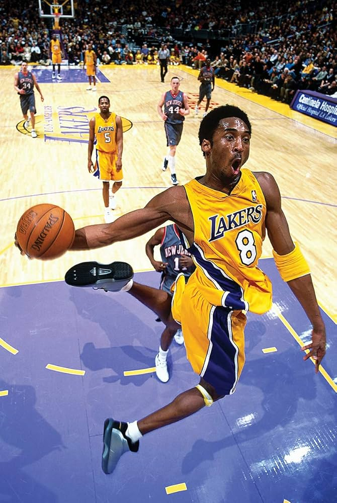
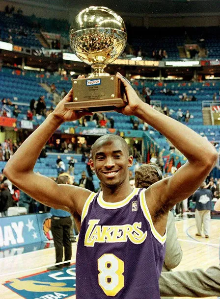

Kobe Bryant
A lenda dos Lakers
5
Títulos
18
All-Star
Kobe Bryant foi um dos maiores ícones do basquete, conhecido por sua ética de trabalho, mentalidade competitiva e dedicação ao jogo.


Sua "Mamba Mentality" influenciou atletas de diversas modalidades em todo o mundo.
Com dois números aposentados pelos Lakers, Kobe também conquistou dois ouros olímpicos com a seleção americana.
Ele terminou sua carreira com média de 25 pontos por jogo e um jogo final histórico de 60 pontos.
“O mais importante é tentar inspirar as pessoas para que elas possam ser grandes em qualquer coisa que queiram fazer.”
- Estreia: 1996
- Time: Los Angeles Lakers
- Altura: 1,98m
- Peso: 96kg
- Posição: Ala-armador
- Prêmios: 2 MVPs das Finais
Fora das quadras, Kobe também foi escritor, produtor e vencedor do Oscar por seu curta "Dear Basketball".
Seu impacto no esporte e na cultura global permanece vivo, inspirando legiões de fãs.